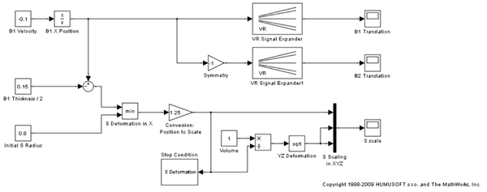

Simulink® 3D Animation™ - Tutorial #3
Tutorial model to be used for V-Realm authoring example in the User's manual. After creating the virtual world according to the instructions in the manual, include the VR block in the model and connect B1, B2 coordinates and S scaling to corresponding nodes in the virtual world.
